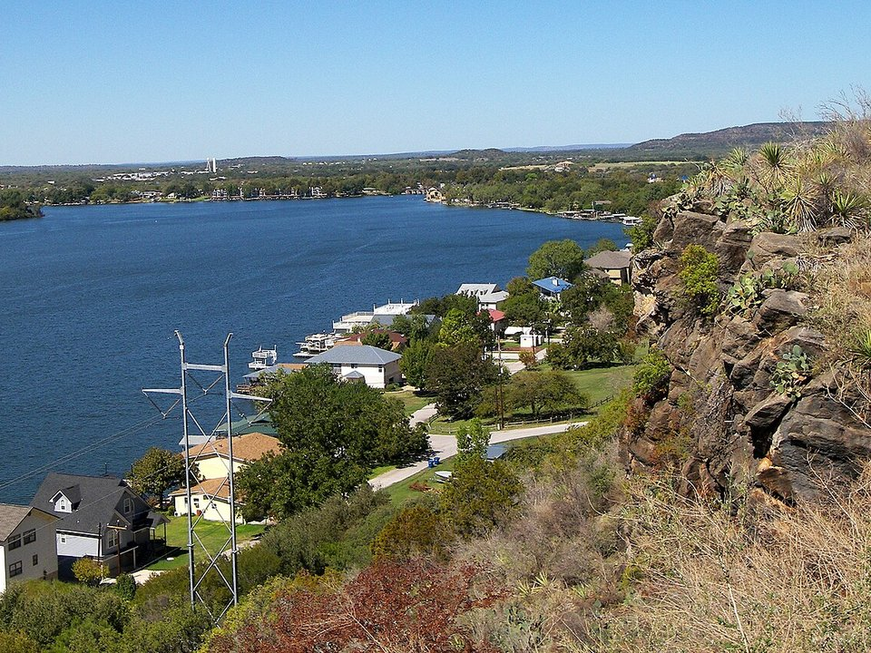

Lake LBJ · Resort
Horseshoe Bay Resort
Golf, a lake beach, marina, pools and a spa.
Official details for Horseshoe Bay ResortLand at the resort, then golf or the lake.
Horseshoe Bay Resort has its own airport, so you can taxi in and be at the pool or on the first tee within minutes. The resort sits on Lake LBJ in the Highland Lakes west of Austin, with three Robert Trent Jones Sr. golf courses, a white-sand lake beach, boats and a spa. Spend a morning on the water, visit the caverns and spring bluebonnets around Marble Falls, and have pie at the Blue Bonnet Cafe.

Time illustration: direct distance at 150 KTAS plus 15 minutes for departure and arrival, matching the discovery page. Use ForeFlight for your actual flight plan.
KDZB, Horseshoe Bay Resort Airport, is a non-towered public airport at 1,093 feet with a 5,977-foot runway, owned by the resort and minutes from the hotel.
Horseshoe Bay Resort Airport, Horseshoe Bay, TX
Deer are common near the runway, especially at dawn and dusk. Ask the Jet Center about parking and transport to the resort. No live fuel price is shown.
Texas flying: hot, bumpy summer afternoons with pop-up thunderstorms; spring severe weather (hail, tornadoes and squall lines) from March to June; gusty south winds; and low morning stratus that spreads inland from the Gulf. About 1000 nm from Myrtle Beach: a long cross-country day with two fuel stops. Plan four or more nights, or break the trip with an overnight on the way.
Rates and availability need travel dates. Book golf and spa times with your room.
Golf, a lake beach, marina, pools and a spa.
Official details for Horseshoe Bay ResortLake views 15 minutes from the airport.
Official details for Hampton Inn & Suites Marble Falls on the LakeA Hill Country winery with rooms, a spa and a brewery, about 40 minutes away.
Official details for Carter Creek Winery Resort & SpaLake houses and cabins on Lake LBJ.
Lake LBJ Online for Lake LBJ rentalsPrices and availability for your dates, through our partner Stay22. This is an affiliate link: we may earn a commission at no cost to you. The picks above are never paid.
Reserve weekend dinners.
Steaks and lakeside dining at the resort.
Official details for Horseshoe Bay Resort restaurantsA Marble Falls diner famous for its pies since 1929.
Official details for Blue Bonnet CafeSpring bluebonnet season is the prettiest time.
This prototype links to the local visitor site. It does not yet match events to your travel dates.
Wildflowers along Hill Country roads.
Texas Hill Country for Bluebonnet seasonBoating and swimming on Lake LBJ.
Horseshoe Bay Resort for Lake seasonMild winters make for year-round golf.
Horseshoe Bay Resort for GolfCheck the local calendar when choosing a weekend, and confirm dates and tickets with the organizer.
A sample resort weekend. This is a long flight; plan four or more nights. No bookings or availability confirmed.
Land at KDZB mid-morning.
Lunch at the resort.
The lake beach, then back to the airport.
Land at KDZB, subject to weather and your actual flight plan.
Check in and the lake beach.
Dinner at the resort.
Golf.
A boat on Lake LBJ or the spa.
Dinner at the resort.
Pie at the Blue Bonnet Cafe.
Return the car and allow time at the FBO.
Texas afternoons bring heat, bumps and storms; leave in the morning.
Golf.
A boat on Lake LBJ.
Dinner at the resort.
These details make the difference between an appealing list and a usable getaway.
Resort, then golf and spa times.
About 1,000 nm from Myrtle Beach: a long day or two easy days.
Watch the runway at dawn and dusk.
March to May and October to November.
Picks and links reviewed by WingAway Weekends. Hours, prices, menus and availability change often, so confirm directly with each place before booking. Spotted something out of date, or have a favorite we missed? Email us at hello@wingawayweekends.com.
WingAway Weekends helps you discover the destination. Use ForeFlight and current official aviation information for route, performance, weather, NOTAMs and preflight decisions. Flight planning and PIC responsibility stay with the pilot.
One fly-in weekend, a Fly to Lunch pick and the newest guides, about once a month.
Free. Unsubscribe anytime.